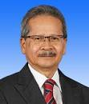
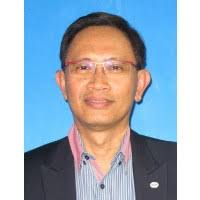

YM Tengku Datuk Dr. Mohd Azzman Shariffadeen Tengku Ibrahim
Chairman, Board of Director, Universiti Malaya

Speaker's background
He was Born in Kota Baru, Kelantan on Dec 15, 1946. He studied at Malay College Kuala Kangsar, Perak before obtaining his undergraduate, Master’s and PhD from the University of Manchester Institute of Science and Technology in the United Kingdom.
He was a former Mimos Berhad president and chief executive officer.
Prof. Dr. Mohamed Ridza Wahiddin
Vice Chancellor of Universiti Sains Islam Malaysia
Speaker's background
He studied his diploma in Islamic Studies; International Islamic University Malaysia, BSc (Hons) Physics, MSc (Theoretical Physics), PhD (Theoretical Physics), and DSc (Higher Doctoral Degree) in UMIST, Manchester, U.K.
He used to teach in University of Malaya and International Islamic University Malaysia.
Dr Mazlan Abbas
Founder, FAVORIOT
Speaker's background
Dr. Mazlan is the co-founder and CEO of FAVORIOT Sdn Bhd. He is ranked among Top 50 Global Thought Leaders on the Internet of Things (February 2019) and Digital Disruption (October 2019) by Thinkers360,
Before FAVORIOT, he spent 2.5 years as CEO of REDtone IOT and 8 years in MIMOS Berhad as Senior Director Wireless Communications Cluster.
Prof Norbik Bashah Idris
CIO, Information Technology Division, Professor, Kulliyyah of ICT

Speaker's background
He finished his bachelor degree in University of New South Wales (Computer Science), Masters Degree in University of Queensland and Doctor of Philosophy in Computer Science (Information Security) in University of Wales.
His specialization is ICT ~ Information, Computer And Communications Technology (ICT) ~ Security System ~ Cryptography - Blockchain, Fintech, Enterpreneurship.